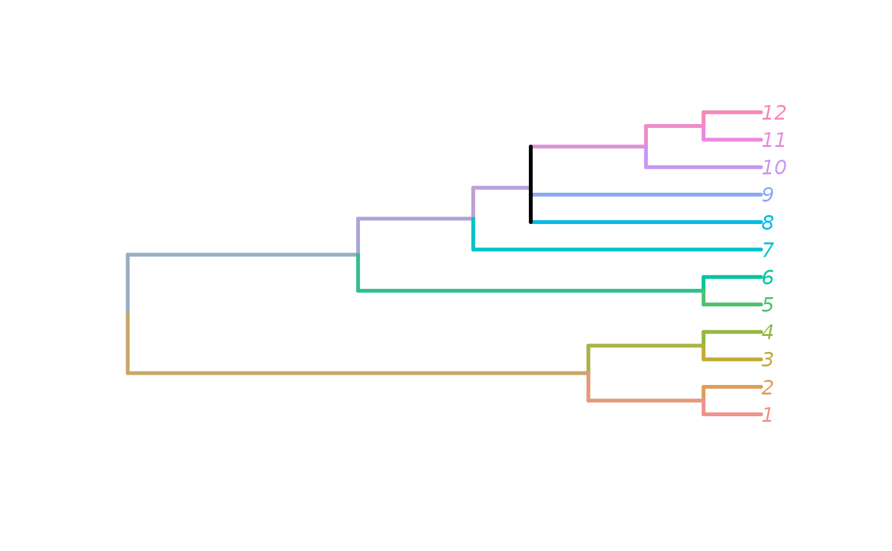
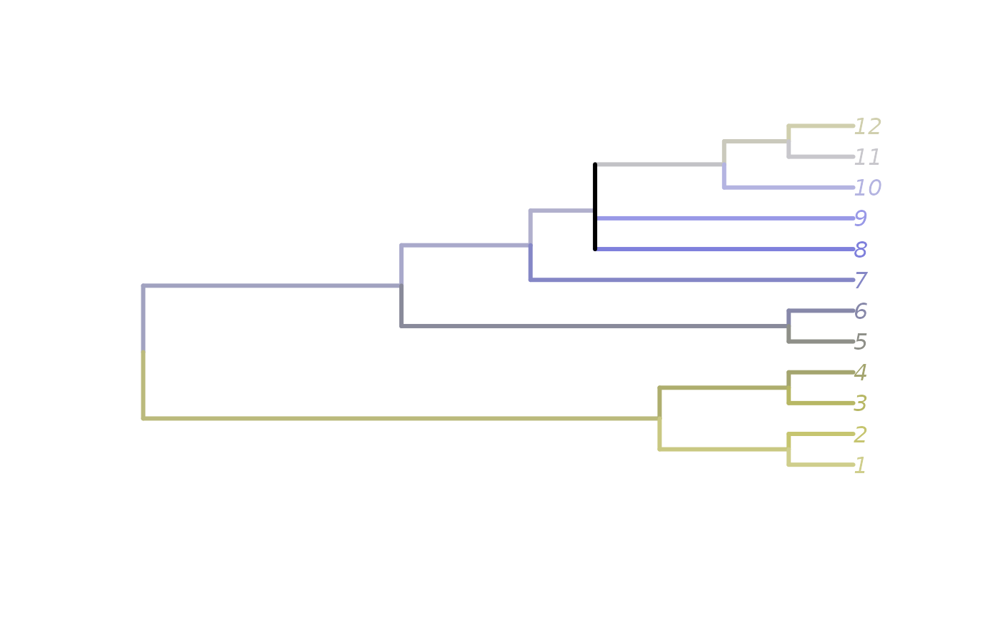
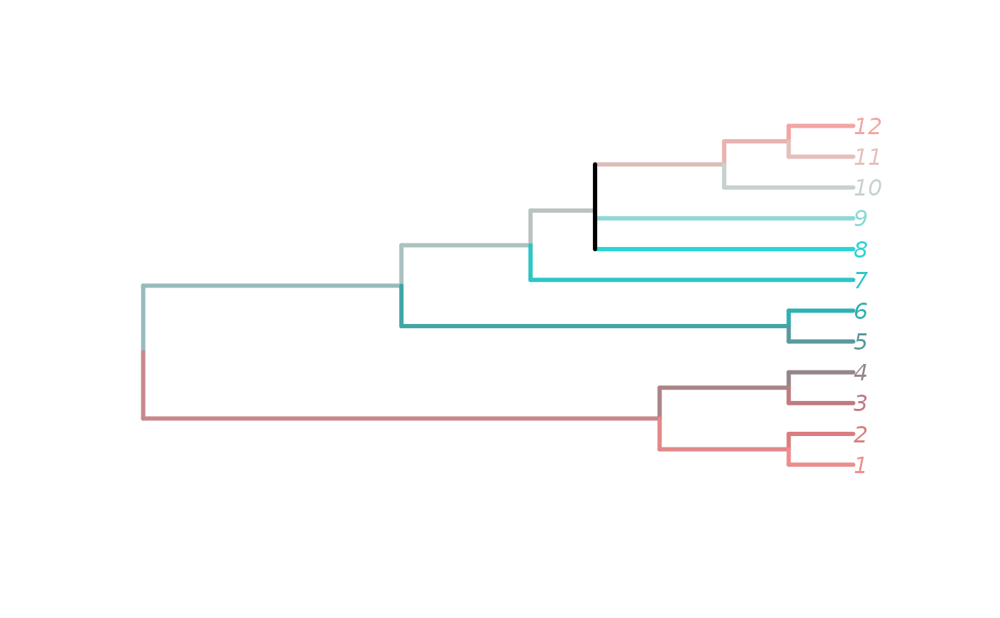
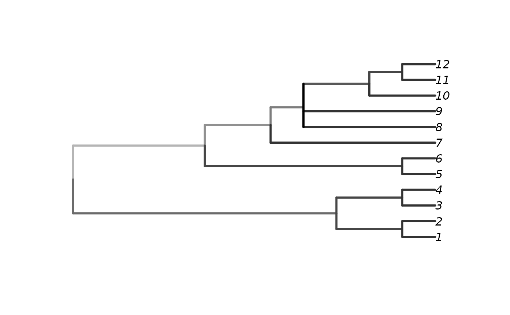

PaintTree() assigns a colour to every edge, leaf, and internal node of a
tree such that sister clades occupy adjacent hue bands proportional to their
tip counts, and saturation grows from zero at the root to one at every tip.
The result is a list of vectors that correspond to
plot.phylo()'s
edge.color, tip.color, and node.color arguments.
Arguments
- tree
A tree of class
phylo.- palette
Either a character string naming one of the built-in palettes (
"default","protanopia","tritanopia", or a functionfunction(h, s)taking vectors of hues in[0, 360]and saturations in[0, 1]and returning a character vector of colours. The"protanopia"and"tritanopia"palettes simulate dichromatic perception of the default HCL spectrum using the Viénot–Brettel–Mollon projection.
Value
A list with three character vectors of hex colours:
edgeColOne colour per edge in
tree$edge, taken from the child node's(hue, saturation).tipColOne colour per leaf, indexed
1:NTip(tree).nodeColOne colour per internal node, indexed so that entry
icorresponds to nodeNTip(tree) + i; the root (entry 1) is grey because its saturation is zero.
Details
Hue is allocated recursively from a 0–360° budget at the root. At each
internal node, the parent's budget is partitioned across its descendant
edges in proportion to the number of leaves descended from each child; the
colour reported for an edge or node is the midpoint of its assigned range.
Saturation s = (nTip - nDesc) / (nTip - 1), where nDesc is the number of
leaves descended from the node (including itself for tips), so the root is
achromatic (s = 0) and every leaf is fully saturated (s = 1).
See also
CladeSizes(), DescendantEdges()
Other tree navigation:
AncestorEdge(),
CladeSizes(),
DescendantEdges(),
EdgeAncestry(),
EdgeDistances(),
ListAncestors(),
MRCA(),
MatchEdges(),
NDescendants(),
NodeDepth(),
NodeNumbers(),
NodeOrder(),
RootNode()
Examples
tree <- BalancedTree(1:8) + PectinateTree(9:14)
tree <- ape::bind.tree(BalancedTree(1:8), PectinateTree(9:12), 8, 4)
paint <- PaintTree(tree)
plot(tree,
edge.color = paint$edgeCol,
tip.color = paint$tipCol,
edge.width = 3)

# Colour-blind-safe variants
paintP <- PaintTree(tree, "protanopia")
plot(tree,
edge.color = paintP$edgeCol,
tip.color = paintP$tipCol,
edge.width = 3)

paintT <- PaintTree(tree, "tritanopia")
plot(tree,
edge.color = paintT$edgeCol,
tip.color = paintT$tipCol,
edge.width = 3)

# User-supplied palette function (greyscale)
grey_pal <- function(h, s) grey(1 - s * 0.8)
paintG <- PaintTree(tree, grey_pal)
plot(tree, edge.color = paintG$edgeCol, edge.width = 3)
